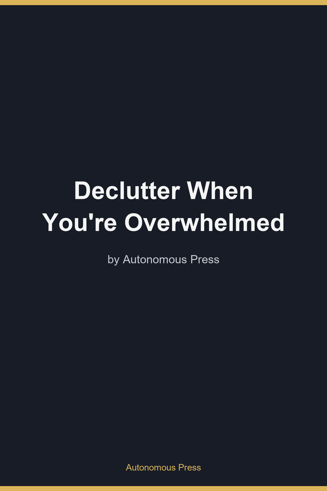

If you've ever stood in the middle of a room holding a single object — a mug, a cable, a shirt you haven't worn in years — and simply stopped, unable to decide whether to keep it or throw it away, you already know the specific, hot shame that comes next. You put the object down roughly where it was. You leave the room. You tell yourself you'll finish later, and some part of you quietly files this away as more proof that you're just not an organized person.
You are not the problem. The task is.
Decluttering is not a cleaning task. It's a decision-making task wearing a cleaning task's clothes.
Here's the part almost no decluttering article explains: every object in a cluttered space represents not one decision, but several, stacked on top of each other. Do I keep this? Where does it go if I keep it? Do I donate it, sell it, or trash it if I don't? What do I do if I'm genuinely not sure? A single "messy" drawer can easily contain forty to eighty of these compound decisions. A garage can hold several thousand.
Your brain has a limited amount of high-quality decision-making capacity per day. Psychologists call the depletion of that capacity decision fatigue, and it behaves a lot like physical fatigue — strong at first, progressively worse the more you draw on it, regardless of how small each individual decision looks from the outside. This is the same basic pattern behind why you can plan something complex with total clarity in the morning and can't decide what to make for dinner by 8 p.m.
This explains a pattern almost everyone who's tried to declutter will recognize: the first fifteen or twenty minutes feel almost fun — you're tossing an expired coupon, a dead pen, moving fast. Then things slow down. A "maybe" pile starts growing faster than the trash pile. Eventually you hit an object that would have taken two seconds an hour earlier, and you just stop. That's not laziness or a sudden mood swing. That's your decision-making capacity for the day running out, and your brain doing exactly what a well-designed system should do when it's out of capacity to decide safely: it halts, rather than proceeding badly.
Why popular decluttering advice makes this worse, not better
Most decluttering advice is aimed at people with plenty of decision-making capacity to spare. "Ask if it sparks joy." "Hold each item and decide if you love it." Each of these is a full, fresh decision — and they ask you to make it, from scratch, for every single object you own. If you own two thousand things worth evaluating, that's two thousand fresh decisions. No wonder the freeze shows up around object number sixty.
There are three specific factors that make decluttering's decision load heavier than it needs to be: genuine ambiguity in the objects themselves, constant switching between different types of decisions (financial, emotional, spatial, all within the same ten seconds), and sessions with no clear end point, which your brain can't ration itself across.
If the freeze is a predictable result of decision volume exceeding decision capacity, the fix is structural, not motivational: reduce the number and complexity of decisions per session so you never approach the ceiling. That means writing your keep/toss rules once, in advance, instead of relitigating them item by item. It means sorting objects into a system that touches each one exactly once instead of picking it up, setting it down, and finding it again in three weeks. It means tackling low-ambiguity categories before high-ambiguity ones, and giving sentimental items — which carry a completely different kind of decision weight — their own separate, slower process entirely.
None of this requires becoming a more disciplined person. It requires a system that asks less of the part of you that runs out first.
That's exactly what Declutter When You're Overwhelmed hands you: the pre-made rules, the one-touch sorting method, the attack order, and a separate protocol for sentimental items and the days you have nothing left — the full framework, laid out step by step, for anyone who's tried before, stalled, and assumed it was their own fault. It wasn't. Grab the book and start with a single 90-second session today.

You don't have a mess problem. You have a decision problem — and nobody ever told you that. This book gives you a system built to need less willpower: pre-made keep/toss rules, a four-zone sort that touches each object once, an attack order that saves the hardest categories for last, a separate slower process for sentimental items, and 90-second sessions for the days you have nothing left.
$7.99
Buy for $7.99Checkout charges NGN 10,932.38 (today's USD/NGN rate) while international USD payments are pending approval.